쇼케이스 이용 및 관리
사선형쇼케이스 직각형쇼케이스 차이, 손님 시선과 놓는 자리로 고르기
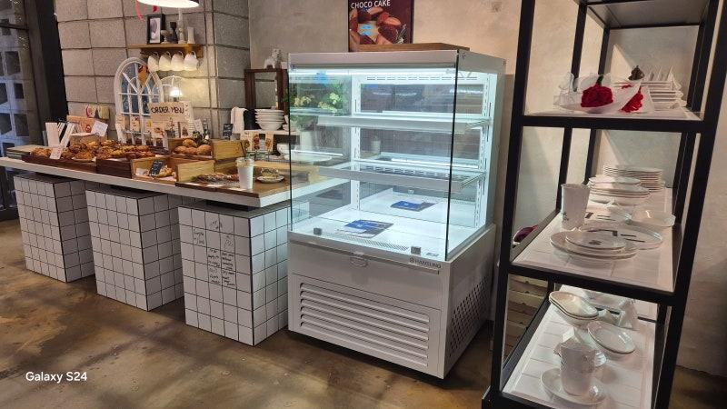
손님이 진열대 정면에 서서 내려다보며 고르는 카운터 앞자리라면 아래 칸까지 한눈에 보이는 사선형쇼케이스가, 옆이나 여러 방향에서 보이는 자리이거나 여러 대를 이어 붙일 자리라면 반듯한 직각형쇼케이스가 잘 맞습니다. 진열 품목보다 손님이 어디서 어떤 자세로 보는지가 선택의 기준입니다.
안녕하세요. 디저트와 반찬, 델리 진열장을 맞춤으로 만드는 한성쇼케이스입니다.
쇼케이스 견적을 받다 보면 사선형으로 할지 직각형으로 할지 묻는 질문을 꼭 받게 됩니다. 사진으로 보면 앞 유리가 비스듬한지 반듯한지 정도의 차이라, 디자인 취향 문제로 생각하고 넘기시는 사장님들이 많으시죠.
그런데 이 각도 하나가 손님이 상품을 얼마나 잘 보는지, 조명이 어떻게 비치는지, 매장에 어떻게 놓을 수 있는지까지 바꿉니다.
같은 케이크를 넣어도 어느 쪽이냐에 따라 아래 칸 판매가 달라지기도 합니다.
오늘은 사선형쇼케이스와 직각형쇼케이스가 실제로 어떻게 다른지, 매장 상황별로 어느 쪽을 고르면 좋은지 정리해 드리겠습니다.
1. 보이는 범위: 정면이냐 측면이냐
사선형은 전면 유리를 비스듬히 눕혀 손님이 선 채로 내려다볼 때 위 칸부터 맨 아래 칸까지 시야가 이어집니다.
상단 프레임이 시선을 가리지 않아 정면에서 고르는 손님에게 유리합니다.
직각형은 앞 유리와 옆 유리가 반듯하게 서 있어 정면뿐 아니라 좌우에서도 내부가 잘 보입니다. 매장 가운데 서 있거나 출입구에서 비스듬히 보이는 자리처럼 여러 방향에서 손님 눈에 걸리는 위치라면 직각형의 통유리 측면이 힘을 발휘합니다.
- 정면에서 내려다보는 자리: 사선형
- 옆과 정면 모두 보이는 자리: 직각형
2. 조명과 반사
사선형은 유리 각도 덕분에 내부 조명이 제품 위로 고르게 떨어지고, 손님 눈에 들어오는 반사가 적은 편입니다.
크림의 결이나 과일 토핑처럼 질감이 중요한 디저트가 입체적으로 보입니다.
직각형은 조명이 위에서 아래로 떨어지는 구조라 아래 칸이 상대적으로 어두워질 수 있어, 칸마다 조명을 넣거나 밝은 LED를 쓰는 경우가 많습니다.
매장 조명이 강한 도심 상권이라면 유리 반사가 손님 눈에 걸리지 않는지 설치 전에 확인해 보세요.
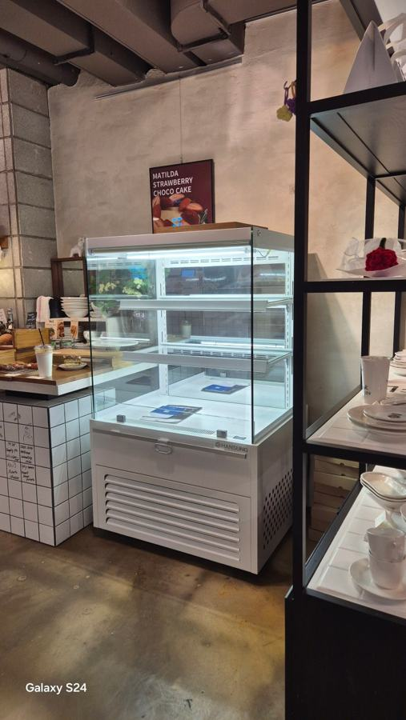
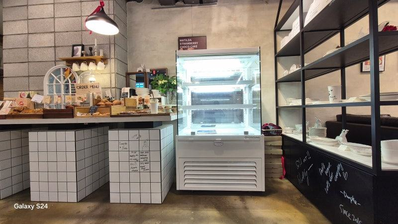
3. 배치와 공간
직각형은 옆면이 반듯해 여러 대를 나란히 이어 붙이거나 벽과 카운터 사이에 딱 맞춰 넣기 쉽습니다. 케이크 칸과 음료 칸을 따로 두고 한 줄로 길게 연결하는 매장에서 많이 씁니다.
사선형은 앞쪽 유리가 비스듬히 나오는 구조라 같은 내부 용량이라도 바닥에서 차지하는 깊이가 다를 수 있습니다.
카운터 앞 통로가 좁다면 유리 끝이 어디까지 나오는지 도면으로 꼭 확인하세요. 대신 좁은 매장에서도 시야가 시원하게 트여 공간이 넓어 보이는 효과가 있습니다.
- 여러 대 연결·벽 사이 끼워 넣기: 직각형
- 카운터 앞 단독 배치: 사선형
- 통로 폭과 유리 돌출 확인
4. 결로와 청소
두 형태 모두 유리 면적이 넓어 매장 습도가 높으면 결로가 생길 수 있습니다. 주택가처럼 문을 자주 열어 두는 매장이라면 결로 방지 유리를 쓸 수 있는지 함께 물어보세요.
청소는 직각형이 유리 면이 반듯해 닦기 수월하고, 사선형은 손님 손이 닿기 쉬운 앞 유리에 손자국이 잘 남는 편입니다.
영업 중 닦는 횟수까지 생각해 두시면 좋습니다.
체크리스트
- 손님이 서는 위치와 보는 방향
- 아래 칸 진열 품목
- 매장 조명 밝기와 반사
- 단독 배치인지 연결 배치인지
- 통로 폭과 유리 돌출
- 결로 방지 유리 필요 여부
현장에서 자주 보는 경우: 매장 규모와 상권에 따라 유리 구성이 갈릴 때
카페와 베이커리에 케이크냉장쇼케이스를 납품하다 보면 매장 형태에 따라 선호하는 구성이 확연히 다릅니다.
대량 진열과 빠른 회전이 필요한 프랜차이즈 매장은 3면 통유리에 밝은 LED를 단 모델을 많이 찾고, 개인 카페는 전면과 좌우가 통유리인 간냉식 모델로 테이블이 적어도 옆에서 제품이 보이게 하는 경우가 많습니다.
상권에 따라서도 갈립니다. 도심 상권은 낮에도 선명하게 보이는 밝은 조명을, 주택가 상권은 따뜻한 톤 조명과 결로 방지 유리를 선호하는 편이라 상담 때 이런 점을 함께 안내해 드립니다.
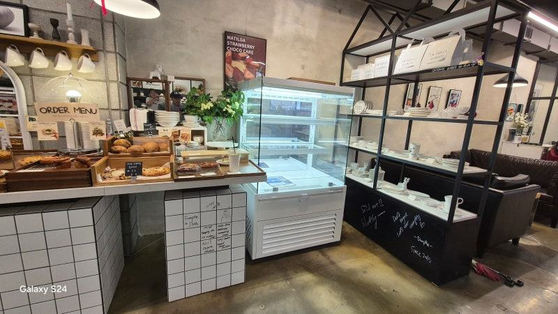
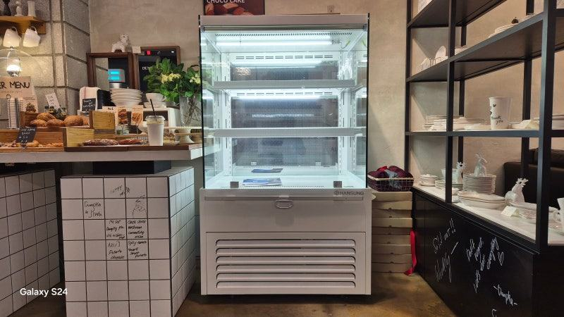
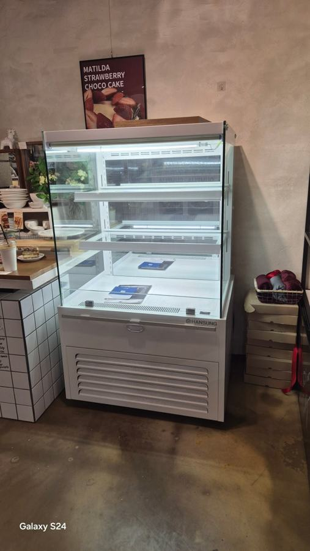
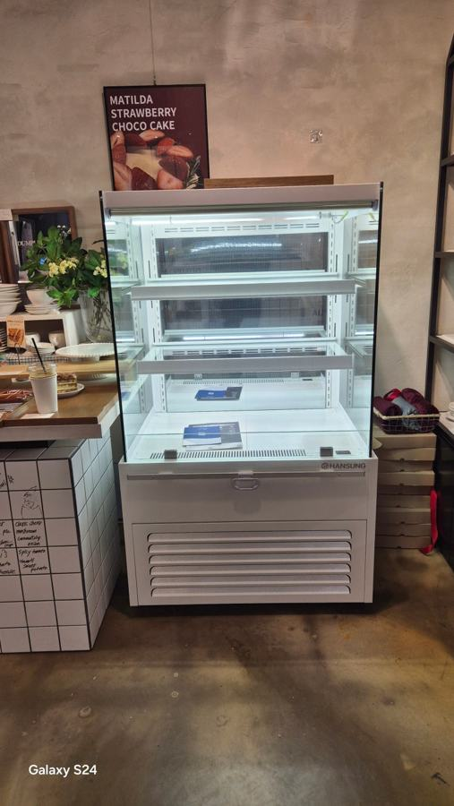
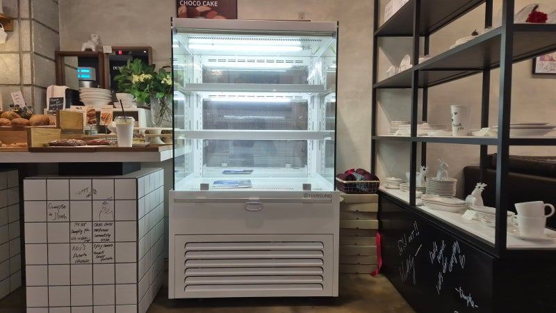
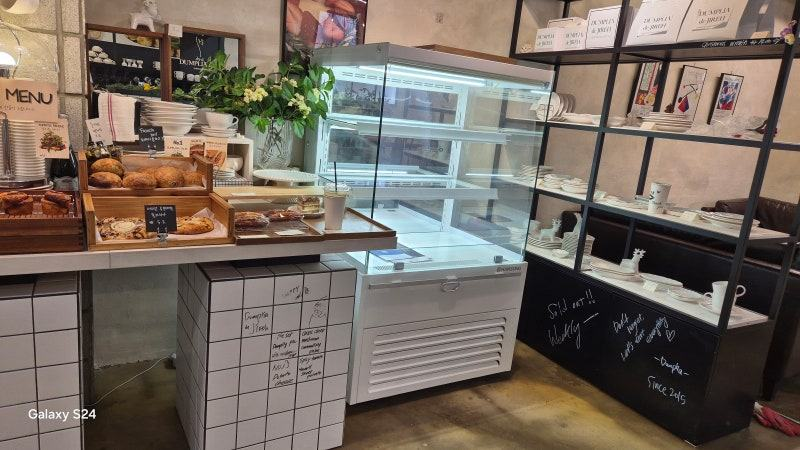
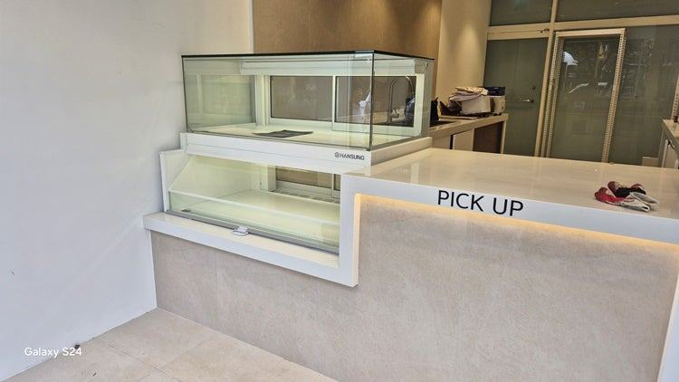
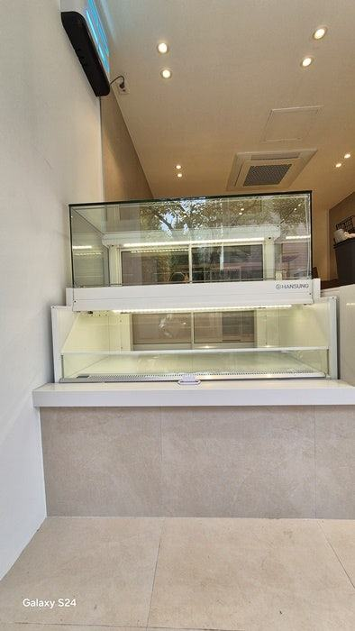
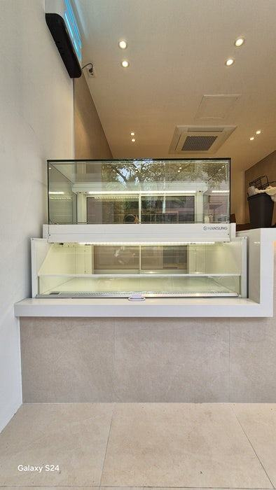
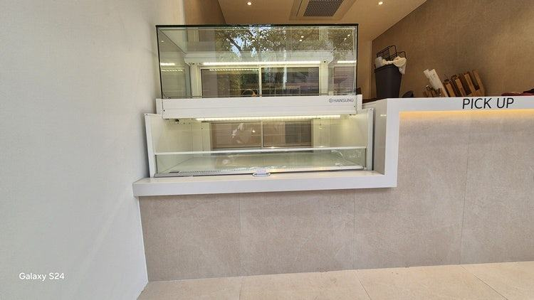
자주 묻는 질문
사선형과 직각형 중 케이크에 더 좋은 쪽이 있나요?
케이크 자체보다 매장 배치가 기준입니다. 카운터 앞에서 내려다보며 고르는 구조라면 사선형이, 매장 가운데나 측면에서 보이는 구조라면 직각형이 더 잘 맞습니다.
기존 직각형 옆에 사선형을 이어 붙여도 될까요?
가능하지만 높이와 앞 유리 선이 달라 이음새가 눈에 띌 수 있습니다. 함께 쓰실 계획이라면 높이와 프레임 색을 맞춰 제작하는 방법을 상담해 드립니다.
형태를 정하기 전에 무엇을 알려 드리면 되나요?
설치할 자리 치수, 손님이 서는 방향, 주변 통로 폭, 진열할 품목을 알려 주세요. 매장 사진이 있으면 시선 높이까지 고려해 형태를 제안해 드립니다.
매장 조건에 맞춰 만드는 한성쇼케이스
원하시는 제품 사진과 설치할 공간 사진만 보내 주셔도 매장에 맞는 구성을 추천해 드립니다.
- 전국 240여 개 A/S 전담 센터 운영
- 본사 대량 자재 매입으로 품질 대비 합리적인 가격
- 유럽제·삼성 냉각 콤프레셔 적용
- 국내 최초 쇼케이스 전문 디자이너 상주
매장 폭과 원하는 진열 구성을 알려 주세요. 실측과 견적을 안내해 드립니다.
031-986-2458